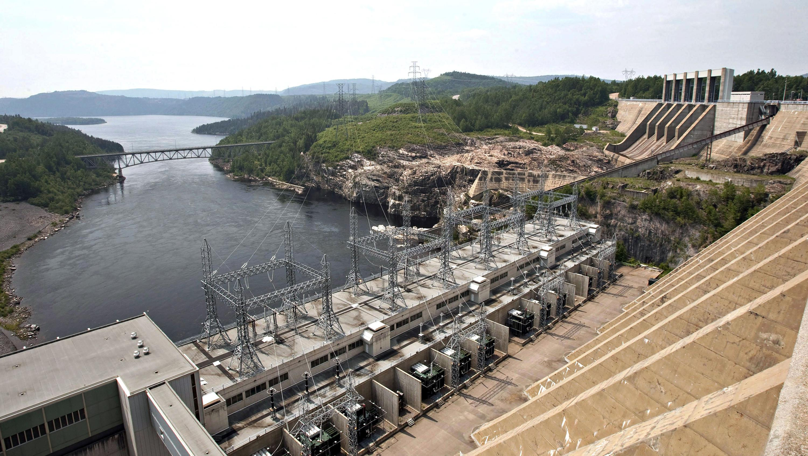
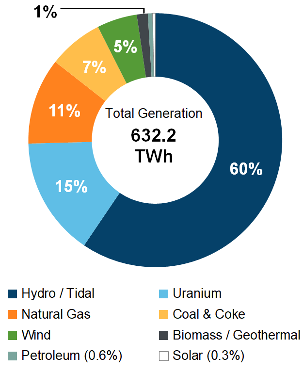

<!DOCTYPE html>
<html>
    <head>
        <!--Linking sheets-->
        <link rel="stylesheet" href="Culminating.css">
        <script src="Culminating.jsx"></script>
        <link rel="icon" type="image/x-icon" href="Favicon.png">
    </head>
    <body>
        <!--nav bar-->
        <header class="header">
            <a href="Home.html" class="logo"><image src="Favicon.png" style="height: 60px;"></a>
            <nav class="navbar">
                <button class="button" onclick="document.location='Login.html'">Sign up</button>
                <a onclick="openNav()">&#9776;</a>
            </nav>
        </header>
            <!--side menu bar-->
            <div id="mySidenav" class="sidenav">
                <a href="javascript:void(0)" class="closebtn" onclick="closeNav()">&times;</a>
                <a href="Mining.html">Mining</a>
                <a href="Forestry.html">Foresty</a>
                <a href="Energy.html">Energy</a>
                <a href="ClimateChange.html">Climate Change</a>
                <a href="https://natural-resources.canada.ca/our-natural-resources/indigenous-peoples-and-natural-resources/22004">Indigenous Rights</a>
            </div>
        </header>
        <!--parallax effect-->
        <div class="wrapper">
            <div class="parallax">
                
                
                <h1 class="title">Energy</h1>
            </div>
            <section>
                <h2>Energy in Canada</h2>
                    <hr>
                    <p>
                        Energy plays a fundamental role in our lives. From the food we eat and the homes we live in to the functioning of Canada's industries: everything requires energy in one form or another. Canada's landscape is rich with diverse and abundant energy sources which are used to fuel the economy. In 2017, the energy sector made up 9.2%, or $175 Billion, of Canada's Gross Domestic Product (GDP). The energy sector directly employed 1.5%, 
                        (or 276,000 jobs) of the national workforce and employment, including indirect jobs, is estimated at 4.9% (or 900,000 jobs).
                    </p>

                    <p>
                        In 2017, the energy sector made up 9.2% of Canada's Gross Domestic Product or $175 Billion. In comparison, the manufacturing sector made up 10%, or $198 Billion.
                    </p>

                    <p>
                        Canada is currently ranked the sixth-largest crude oil producer and the fifth-largest natural gas producer in the world. Our country is also a large net exporter of energy; exporting production that is surplus to the current and future needs of Canadians. Energy products made up 17% of Canada's total exports and were valued at $71.4 billion in 2017.
                    </p>

                    <p>
                        The NEB also regulates 1,462 km of international power lines.
                    </p>

                    <p>
                        Most Canadian power lines fall within provincial jurisdiction because roughly 90% of the electricity produced in Canada is consumed domestically. However, international demand for Canadian power which is mostly generated from renewable sources  is expected to increase in coming years.
                    </p>

                    <p>
                        Canada has considerable non-hydro renewable resources including wind, biomass, solar, tidal, wave, and geothermal. Canada is the second-largest hydroelectricity producer in the world and is ranked seventh with respect to installed wind power capacity. 
                        Policy incentives and declining costs continues to drive significant growth in the use of renewable generating technologies.
                    </p>

                    <p>
                        In 2018, roughly 80% of the electricity in Canada was non-emitting. The breakdown of generation source is as follows: 
                    </p>

                    <!--dividing page into half to have side-by-side divs-->
                    <div style="width: 100%;">
                        <div style="width: 50%; float: right; margin-top: 1%;">
                            <center></center>
                        </div>
                        <div style="width: 50%; float: left;">
                            <center>
                                <p>
                                    Canada's energy sector is evolving. Increasing energy efficiency, the changing nature of the economy and other factors are contributing to the country's decreasing energy intensity (energy use per units of GDP). 
                                    Falling costs and climate policies are facilitating the deployment of renewable energy such as wind and solar into the grid.
                                </p>
                                <p>
                                    Energy markets keep uctuating in response to prices, market developments, growing oil and natural gas production and capacity to transport commodities.
                                    Energy systems are complex, involving a variety of factors interacting in sometimes unexpected ways.
                                </p>
            
                                <p>
                                    In the future, Canada is projected to keep expanding its energy production capacity, both from renewable and fossil fuel sources. 
                                    The energy sector as a whole will keep evolving and be shaped by demand, supply, technology and policies.
                                </p>
                            </center>
                        </div>
                    </div>
                <h2>Energy Sector by Province and Territory</h2>

                    <hr>
                    <p>
                        The energy sector's relative share of Canada's GDP varies greatly among the provinces and territories.
                    </p>

                    <p>
                        In Alberta, Newfoundland and Labrador, and Saskatchewan, the energy sector contributed, respectively, 21.61%, 23.5% and 16.09% of provincial GDP. This is significantly more than in the rest of Canada. In these provinces, the oil and gas sector makes up a major part of economic activity. 
                    </p>

                    <p>
                        The moderately high share of GDP in British Columbia, Manitoba, and Quebec are explained by their hydroelectric assets, which allows them to generate substantial revenues from electricity exports to the U.S and neighboring provinces. British Columbia is also a major natural gas producer and exporter.
                        New Brunswick's relatively strong energy sector comes from a mix of electricity surpluses and crude oil rfining.
                    </p>

                    <p>
                        Alberta also has the largest share of direct energy sector employment of all provinces. In 2017, it directly accounted for 6% of the province's employment.
                        Saskatchewan's and Newfoundland and Labrador's energy sectors came in second and third position, with 1.55% and 0.85% of total provincial employment.
                    </p>

                <h2>Relative Share of Energy Sector on Provincial GDP</h2>

                <hr>
                <!--dividing page into half to have side-by-side divs-->
                        <center>
                            
                        </center>

                        <center>
                            <button onclick="showInfo()" class="button">More about the graph</button>
                        </center>
        
                        <div id="infoBox">
                            <textarea style="width: 100%; min-height: 10vh;">
                                    Description: Relative Share of Energy Sector on Provincial GDP:
                                    Newfoundland and Labrador - 23.5
                                    Prince Edward Island - 1.26
                                    Nova Scotia - 2.26
                                    New Brunswick - 5.72
                                    Quebec - 4.23
                                    Ontario - 2.58
                                    Manitoba - 5.62
                                    Saskatchewan - 16.09
                                    Alberta - 21.61
                                    British Columbia - 5.37
                                    YT - Yukon - 1.46
                                    Northwest Territories - 2.28
                                    NT - Nunavut - 1.53
                            </textarea>
                <hr>
            </section>
        </div>
    </body>
</html>
